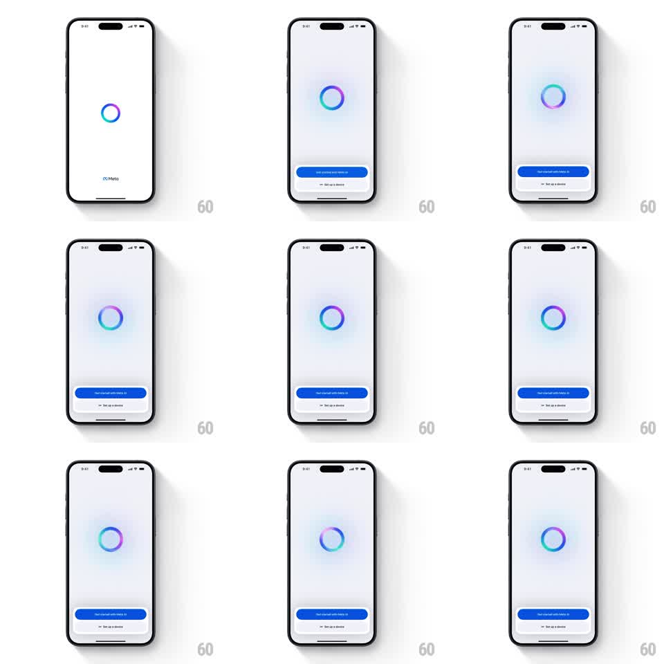

Media
Frame-by-frame

Rebuild this animation 1:1: Meta AI's get-started intro - a gradient ring spins slowly with a breathing glow while the bottom action card rises and its primary button morphs from a compact pill to a full-width bar.

Rebuild this animation 1:1: Meta AI's get-started intro - a gradient ring spins slowly with a breathing glow while the bottom action card rises and its primary button morphs from a compact pill to a full-width bar. ## Integration Integration: stack-agnostic spec - springs given as stiffness/damping, timed motions as duration + curve; map every value to your framework and animation library of choice. ## Scene White intro screen: a gradient ring (Meta AI loop colors: blue, purple, teal) centered with a soft radial glow; a bottom card holding "Get started with Meta AI" (blue button) and "Set up a device" (secondary link). The Meta wordmark appears small at the bottom in the opening state. ## Motion spec Pattern: rotating gradient ring with breathing glow and morphing CTA. - Opening: the ring scales in from 0.6 with a fade (spring ~280/18, 500ms) while the Meta wordmark fades out (200ms). - The ring's gradient rotates continuously (one revolution per 4s, linear); the glow behind it breathes (radius +-10%, opacity 0.4 -> 0.7, 2.4s, ease-in-out). - The ring itself pulses subtly (scale 1 -> 1.03 -> 1, 3s). - The bottom card slides up (spring ~300/24, 350ms, 200ms after the ring appears). - The primary button morphs: it enters as a compact pill (label width) and stretches to full-width over 400ms (spring ~280/20), the label staying centered; the secondary link fades in below (250ms, 150ms later). ## Calibration - Gradient rotation is on the ring's stroke only; the ring geometry does not spin. - The glow is a blurred radial gradient, brand hues matching the ring. ## Reduced motion Static ring and glow; card and button fade in (300ms). ## Don't miss - Ring thickness ~8pt with a gap-free closed loop - it is a ring, not a spinner arc. - The button morph happens once on entry; it never re-triggers.